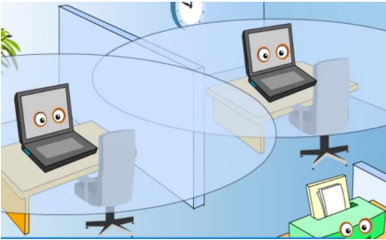
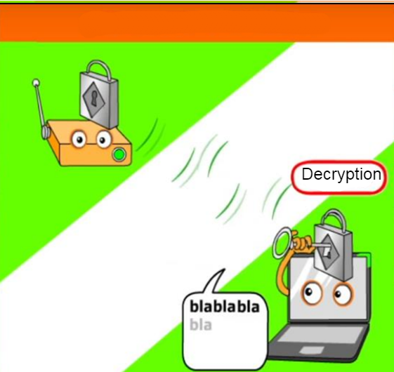

Whether you have a Wi-Fi network or a network that uses only networking cables, it is crucial to protect it. Malicious people can intrude into your network and steal personal data if it isn’t protected enough.
Types of Network
Wired Network
Connecting your computers with cables is great since the transmissions can’t be intercepted unless the hacker plugs a cable directly into your computer network. You can connect your device directly to your router with an ethernet cable if you want to have access to the Internet. The bandwidth with a wired network is usually faster than a wireless connection’s since the data isn’t transmitted through radio waves. Because cables rely on a physical connection, it is more stable than wi-fi.
{kind=link}
Using a network with only networking cables is great, but it has its disadvantages. The biggest one is that your connection entirely depends on the cable. If the cable is unplugged, you lose all connections to the other devices in the network. You cannot move your device depending on your cable’s length, and, even if you can, you will always have a cable in your way.
{kind=link}
Infrared Network
Infrared Networks use infrared lasers to transmit data between devices. This type of network is very rare. This method provides lower transmission speed than cables, but you don’t need to directly connect devices with a cable. If the infrared laser is aligned with the infrared receptor, the two devices are connected. This means that if a hacker wanted to intrude int your network, he would have a lot of difficulty since he cannot intercept the transmissions without physically intercepting the laser.
{kind=link}
Infrareds have another big flaw. The lasers can’t pass through obstacles. This makes the creation of an infrared network very complex since you need to think about its environment. Furthermore, because infrared lasers always need to be aligned with a receptor, you cannot move your devices freely.
{kind=link}
Bluetooth Network
Bluetooth sends radio waves to transmit data between devices. Unlike infrared lasers, Bluetooth can go through obstacles. Also, it consumes less energy than infrared. Unfortunately, certain obstacles can still block the transmission. Typically, this wireless technology has a short range of about ten meters. Since Bluetooth emits radio waves, a malicious person could intercept them if he is within range of the network.
{kind=link}
Wi-Fi Network
Wi-Fi is the best alternative to other wireless networks. That’s why it’s the most popular network method. It transmits more data per second, and it has a long range of about 50 meters. It can emit waves through many obstacles, but it cannot go through walls that are resistant to radio waves like concrete walls.
{kind=link}
Wi-Fi Security
The Dangers of a Wi-Fi Network
A Wi-Fi network can be hacked when an attacker connects to it to steal your data. Also, the hacker can intercept the radio waves of your network. Furthermore, the hacker could even use your Wi-Fi to anonymously attack other machines on another network.
{kind=link}
SSID
The SSID of your Wi-Fi network is the name of your wireless network. You need to input the name, or select it in a list, and input a password to connect to the network. For security reasons, you should change the original SSID and password of your network.
WEP
WEP is a security protocol designed for wireless networks. With RC4 encryption, this protocol encrypts all the data that is sent between devices on the network, and the device that receives the data reads it with a decryption key. It is called Wired Equivalent Privacy (WEP) because it was supposed to be as secure as a wired network, but it is easily bypassed by hackers. For this reason, this protocol is not recommended. Furthermore, unlike recent wireless security protocols, WEP is complex to configure. It was approved in 1999 and many more secure protocols were created since then.
{kind=link}
WPA
WPA (Wi-Fi Protected Access) was released in 2002 in response to the security breach of WEP. It was a temporary solution to the problem. It is easier to configure than WEP and a bit safer. Like WEP, it encrypts the data, but this protocol uses TKIP encryption that forces the device that decrypts the data to use many keys to do it. Even so, it can easily be broken by an attacker.
{kind=link}
WPA2
WPA2 (Wi-Fi Protected Access version 2) is the successor of WPA. It replaced the TKIP encryption with AES encryption which is more secure. This is the most widely spread protocol since it’s the safest.
The Best Protocol
You should always choose the safest security protocol that is accessible on your router. Here is the list of protocols from best to worst:
- WPA2 + AES
- WPA2 + AES
- WPA + TKIP
- WEP
- Open network (No security)
How to Secure your Wi-Fi
-
Use the WPA2/AES protocol.
As mentioned before, WPA2 with AES encryption is the safest security protocol. Encrypting your data is important so that anyone that intercepts it cannot read it and steal your data. -
Change the SSID of your wireless network.
Using another SSID than the default one makes it harder for hackers to find it. -
Deactivate the diffusion of your SSID.
In the settings of your network, you can disable this option. If the SSID isn’t diffused, it doesn’t appear in a list of Wi-Fi networks on a device. This means that someone needs to input the name of the Wi-Fi manually to connect to it. Also, it makes your Wi-Fi more private -
Deactivate wireless functionalities if you aren’t using them.
Most routers let you connect to them wirelessly to configure them. If you aren’t using that, you should deactivate it since it decreases the risk of a hacker accessing your router. -
Deactivate the automatic connection on your device for Wi-Fi connections that aren’t secured.
When you are on a dangerous Wi-Fi network, someone could steal your data. Furthermore, many people create free Wi-Fi networks that aren’t secured to lure people to use them so they can have access to your personal information. -
Deactivate the DHCP of your router and assign IP addresses manually.
If the DHCP is deactivated, it won’t assign local IP addresses automatically to devices. You can assign a local IP address manually to all the devices you know on your network. This way, a device can only use your Wi-Fi if you manually added them to a list. A hacker can’t connect to your Wi-Fi unless you added their device to your router. -
Use MAC address filter
If you add a MAC address filter, you can list all the unique MAC addresses of the devices that can connect to your Wi-Fi. Like the deactivation of the DHCP, this prevents unknown devices from connecting to your network. -
Use WPS
If WPS is available on your router, you should use it. Every time a new device requests a connection, it requires you to physically press a button on your router to allow the connection. This prevents a malicious person from connecting to your network wirelessly.
{kind=link}
{kind=link}
Sources:
20. Rachid Kadouche, Lionel-Groulx College
Images by PAUSE CAFÉ, “COMMENT FONCTION LE WIFI? LE TOUS SUR LES RÉSEAUX SANS FIL”, November 18, 2019, https://www.youtube.com/watch?v=ijFIqCeABIM
· Header's image by TrustNet, 2022 https://www.trustnetinc.com/network-security-issues/